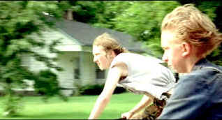

| Gummo/C-,B |
| New Line/1997/95/ANA 1.85 |
The title Gummo refers to Gummo Marx, the fifth Marx Brother, the one
you seldom hear about. Before the boys moved onto the movie screen, Gummo had departed the act. Gummo
is about those people you never hear about, and maybe you really don't want to hear about. Only
Gummo Marx made a fortune in Los Angeles real estate. The characters in Gummo are locked in
the down elevator with no stop in sight.
The film opens with a narrative reflection on a tornado devastation that
flattened Xenia, Ohio in the seventies. The reflection is intercut a number of times during the
often incomprehensible narrative that follows. This is one tornado that didn't transport me or
anyone else to the land of Oz. I am still recovering from watching Gummo. How many dead cats
does it take to build a movie upon? Who were these characters lost in dark, hopeless regions of
Ohio? Writer/director Harmony Korine's first feature as a director lacks the narrative structure,
however free-flowing, of his first script, Kids. Larry Clark did a great job directing Kids.
Korine is a little bit lost in the dismal world of Gummo.
 |
| Cat hunters of Middle America on the prowl. ©New Line |
There are compelling elements to Gummo, but the chopped Korine
structure simply fails to allow an audience to ride the tornado that this filmmaker has created.
The world of Xenia, Ohio seems populated by a collection of depraved lost souls and deviants.
There's a kid roaming around wearing pink bunny ears. He just may be the most normal of the crew.
Two pals are the best darn cat hunters in Xenia township until they get some serious competition
from a young expert with poison. That conflict is never really developed or resolved. Whatever
happened to the young gay man who came on to the dwarf. At least we know the dwarf showed up again
to do some arm wrestling. But wait: there are albino gals waiting int he wings panting hotly over
prospects of bedding Patrick Swayzee; various women of mentally diminished abilities make love or
shave
The acting is natural, uninhibited, but directionless. The characters are
ciphers, left adrift by writer/director Korine. Chloe Sevigny effectively plays one of the sisters
that represent the closest thing to normal in Gummo. The cat hunters, Tummler and Solomon,
are played with deadpan solemnity by Nick Sutton and Jacob Reynolds. Linda Manz has some
interestingly surreal moments as Solomon's mother. Harmony Korine puts in an appearance as confused
young gay man. One is left with the feeling that Gummo is a sense memory collection of home movies
that exist in Korine's mind.
The DVD appears to be an accurate reflection of Korine's original material.
Korine shot in a mixed bag of media including video. It's not consistently sharp and there is an
abundance of grain. Colors is slightly muted, almost like they've been blown away by the force of
the tornado. The Dolby Digital 2 channel stereo surround is in your face. A gallery of stills from
the film is accompanied by an audio interview of Korine as an extra.
Selections from the Feature Archive include articles on Akira Kurosawa, Frank Darabont, Blonde Bimbos, Hollywood Street Gangs, or Vietnam: The Hollywood Pariah, and many more....
Transferring Zoetrope's Vision

American Zoetrope's Technical Director Kim Aubry talks about bringing the studios product out in the best light. Click on the image for the interview.

Need a daily fix of movie quotes. Reel Quotes Newsletter has the answer. Click on the Reel Quotes symbol for more.

|
Home Theater Talk
Cartoons |

 Kinoeye Archive
Kinoeye Archive
This is a resource of all content-rich
materials on the web relating to Central and East European cinema. The ultimate aim of the Kinoeye
Archive is to provide a near-as-damn-it definitive index of intelligent and thoughtful
English-language analysis of Central and Eastern European cinema on the web.

The DVD Forum is an international association of hardware
manufacturers, software firms and other users of Digital Versatile Discs (the "DVD
Format"), created for the purpose of exchanging and disseminating ideas and information about
the DVD Format and its technical capabilities, improvements and innovations.